Led by World-Class
Researchers
The Centre brings together some of IIT Madras's most accomplished faculty, united by a shared commitment to translating research excellence into industrial impact for India's energy sector.
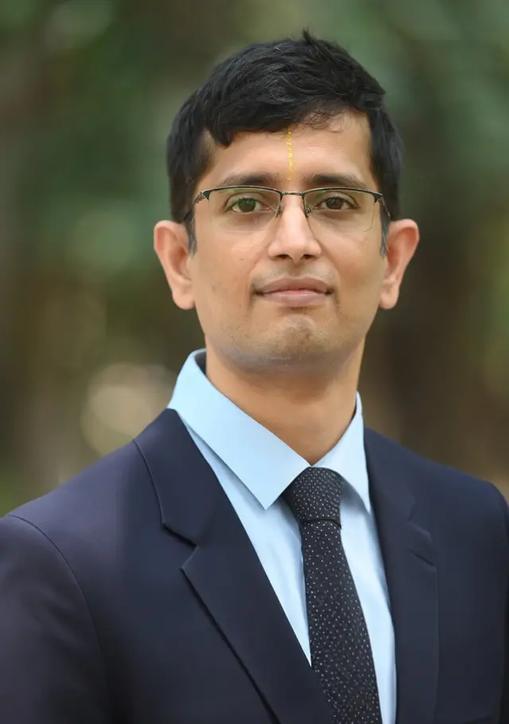
- Waste heat recovery
- Industrial decarbonization
- High-temperature heat pumps
- Emission monitoring (PM, NOx, SOx)
- Aerosol technology
- ORC systems
- Process heating electrification
Professor at IIT Madras leading industrial energy systems and decarbonization research. Read full bio
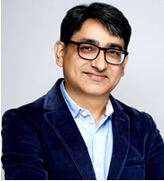
- Gas hydrates
- Unconventional energy recovery
- CO2 capture & sequestration
- Water purification & desalination
- Hydrothermal liquefaction
Professor at IIT Madras leading sustainability, net-zero technologies, and process innovation. Read full bio
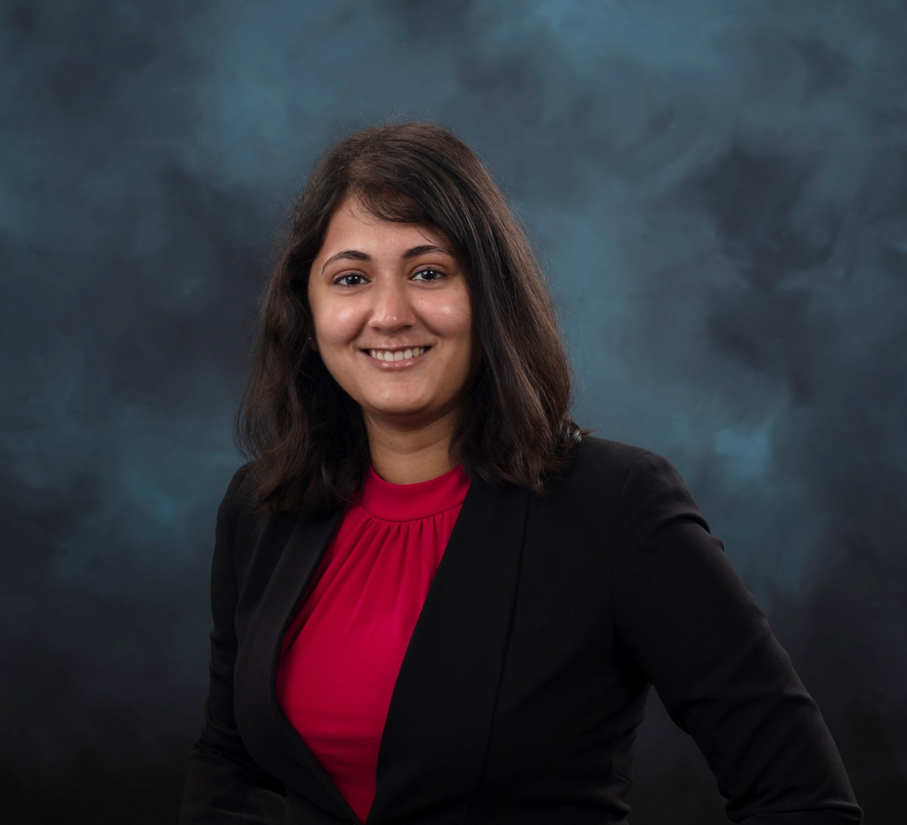
- Large-area additive manufacturing
- Polymers & composites
Materials scientist with R&D expertise in large-scale additive manufacturing for next-generation polymers and composites. Read full bio
Prof. Satyanarayanan Seshadri
Prof. Satyanarayanan Seshadri is a Professor at IIT Madras and a leading researcher in industrial energy systems and decarbonization. He heads the Energy & Emissions Research Group (EnERG), focusing on developing technologies for energy efficiency, waste heat recovery, and emissions mitigation in process industries.He has extensive industry experience, having worked at GE Global Research and Forbes Marshall in energy systems and steam technologies before transitioning to academia. His research spans advanced heat recovery systems, high-temperature heat pumps, and clean heating solutions for industrial applications.He also plays a key role in national-level initiatives on energy transition, collaborating with industry bodies and policy organizations, and contributes to scaling technologies such as green hydrogen and industrial electrification in India.He earned his PhD in Aerosol Science from Texas A&M University.
Prof. Rajnish Kumar, FRSC
Rajnish Kumar, FRSC is a professor in the Department Chemical Engineering at IIT Madras. He currently heads the School of Sustainability, at IIT Madras. He is also a board member of “Energy Consortium” which is a consortium of 13 industries collaborating on net-zero technologies with IIT Madras. In past, he has served as senior scientist at CSIR-NCL, Pune and research associate at National Research Council, Canada. His PhD is from The University of British Columbia, Canada, and master’s from Indian Institute of Science, Bangalore. He has research interests in gas hydrates, carbon dioxide capture and sequestration, process development and scale-up. Rajnish is a recipient of Shanti Swarup Bhatnagar Award in Engineering Sciences (2022). Rajnish is also a recipient of NASI – Scopus Young Scientist Award in Chemistry for the year 2016. He was recognized as Highly Cited Researcher in the year 2018 (in Engineering). In 2020, Rajnish received Dr. YBG Verma Award for Excellence in Chemical Engineering Teaching.
Dr. Vidya Kishore
Dr. Vidya Kishore is a materials scientist, with R&D expertise in large-scale additive manufacturing (3D printing) focusing on advancing next-generation polymers and composites for applications in energy, infrastructure, and sustainable manufacturing.She brings eight years of R&D experience from the US Department of Energy's Manufacturing Demonstration Facility at Oak Ridge National Laboratory (ORNL), Tennessee, where she led and contributed to pioneering initiatives in materials development for extrusion-based large-area additive manufacturing processes. Her work has involved leading interdisciplinary teams and collaborating with industry, academia, and global research consortia to translate advanced materials research into real-world applications.She was the recipient of the 2022 Young Professionals Emerging Leadership Award from SAMPE North America (Society for the Advancement of Materials and Process Engineering). She has authored over 35 publications in high-impact journals, conference proceedings, and technical reports, with more than 2,000 citations.She holds a PhD in Energy Science and Engineering from the University of Tennessee (Bredesen Center for Interdisciplinary Research & Graduate Education).
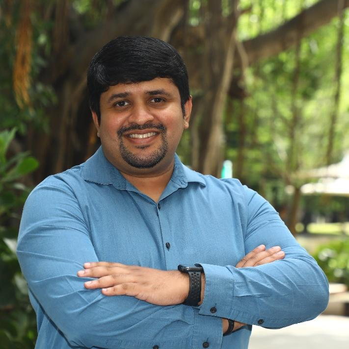
Professor Nitin Muralidharan is a Material Scientist and Chemical Engineer with background in the area of next-generation energy storage technologies for Electric Vehicle (EV), Battery Energy Storage Systems (BESS) and Electric Vertical Take-off and Lift (EVTOL) applications. Read full bio
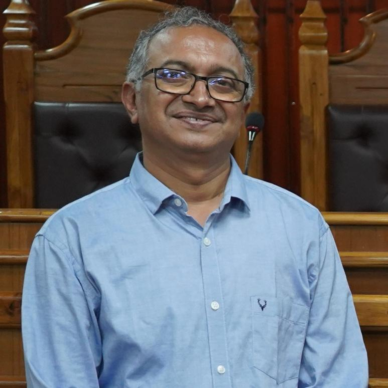
Prof. Abhijit P. Deshpande is a Professor in the Department of Chemical Engineering at the Indian Institute of Technology Madras (IIT Madras), Chennai. Read full bio
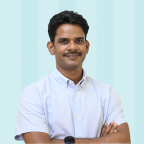
Dr. Ethayaraja Mani is a distinguished academic and researcher in chemical engineering, currently serving as a Professor in the Department of Chemical Engineering at Indian Institute of Technology Madras. Read full bio
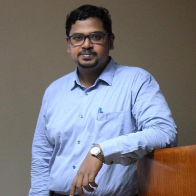
Dr. Sankha Karmakar is an Assistant Professor in the Department of Chemical Engineering at the Indian Institute of Technology Madras Read full bio
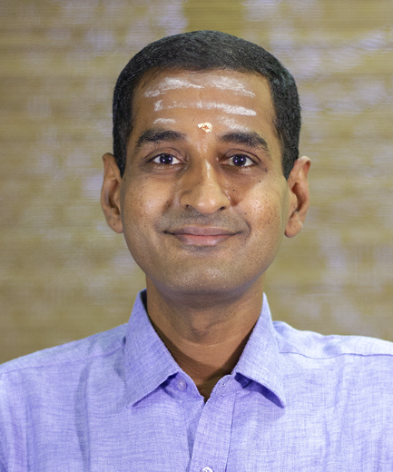
C. S. Shankar Ram received his B.E. degree in Mechanical Engineering from Motilal Nehru Regional Engineering College, Allahabad, India, and M.S. and Ph.D. degrees from Texas A&M University, USA. Read full bio
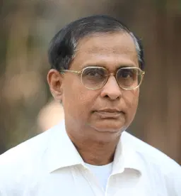
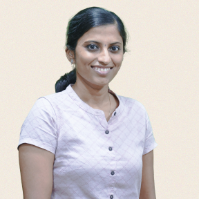
Dr. Swathi Sudhakar is an Assistant Professor at IIT Madras working at the interface of nanotechnology and biology. Read full bio
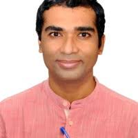
Prof. Tiju Thomas is a Professor in the Department of Metallurgical and Materials Engineering at IIT Madras. Read full bio
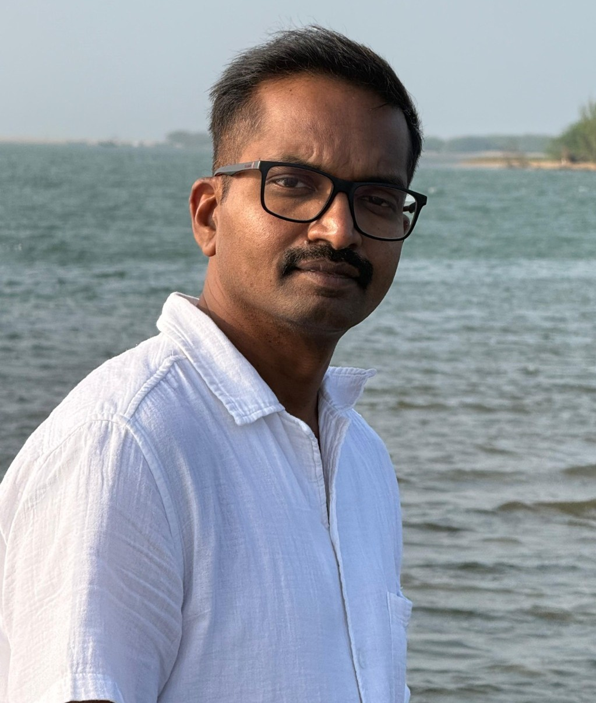
Dr. Kothandaraman Ramanujam is a Professor in the Department of Chemistry at the Indian Institute of Technology Madras (IIT Madras), Chennai. Read full bio
Dr. Nithin Muralidharan
Professor Nitin Muralidharan is a Material Scientist and Chemical Engineer with background in the area of next-generation energy storage technologies for Electric Vehicle (EV), Battery Energy Storage Systems (BESS) and Electric Vertical Take-off and Lift (EVTOL) applications. He also serves as the Associate Editor of Elsevier's Journal of Power Sources (IF: 7.9), a prestigious and historic journal in the area of energy storage. His research expertise encompasses key directions into Li, Na ion and metal batteries, solid state batteries and next-gen electrochemical energy storage systems. He is the recipient of notable awards in the battery R&D space and has also received two R&D 100 awards also termed as the Oscars of Innovation, in 2020 and 2022 for inventions such as novel cathode material for co-free batteries and SOLIDPAC. Prior to joining IITM, Dr. Nitin Muralidharan was a Staff Scientist at United States Department of Energy's (US. DOE) Oak Ridge National Laboratory (ORNL) managing a broad portfolio of R&D in Battery Manufacturing, New Energy Storage Material Development, Solid State Batteries and Battery Recycling. He was also a Post-doctoral Research Associate at ORNL at the US. DOE's Battery Manufacturing Facility (BMF). He was also the finalist for the prestigious globally competitive Weinberg Distinguished Staff Fellowship at ORNL in 2018. He is one of the pioneers of the field of mechano-electrochemistry with several foundational publications in this area. He received his Doctoral Degree in Interdisciplinary Materials Science from Vanderbilt University in Nashville, Tennessee, USA. Prof. Nitin joined Indian Institute of Technology Madras (IITM), Department of Chemical Engineering in April 2023 is currently leads the EMERGE Research Group aimed at developing material driven solutions to combat the challenges pertaining to the climate-water-energy nexus.
Dr. Abhijit P. Deshpande
Prof. Abhijit P. Deshpande is a Professor in the Department of Chemical Engineering at the Indian Institute of Technology Madras (IIT Madras), Chennai. He earned his Ph.D. from the University of Washington and has been with IIT Madras since 1996. His research focuses on polymers, rheology, ionic polymers, and soft matter systems. He has contributed extensively to academia with over 100 publications, multiple patents, and supervision of numerous postgraduate and doctoral students. His work also spans industrial collaborations and funded research projects in advanced materials and polymer engineering.
Dr. Ethayaraja Mani
Prof. Ethayaraja Mani is a distinguished academic and researcher in chemical engineering, currently serving as a Professor in the Department of Chemical Engineering at Indian Institute of Technology Madras, where he is also associated with interdisciplinary initiatives such as the School of Sustainability. He completed his B.Tech. in Chemical Engineering in 2003 and went on to earn his Ph.D. in the same field, with research in colloids and interface science that received notable recognition. Following postdoctoral work at Utrecht University and University of Amsterdam, he joined IIT Madras in 2011 as an Assistant Professor and has since risen to the rank of Professor. His research lies at the intersection of soft matter physics, chemical engineering, and materials science, with key contributions in molecular simulations, colloidal self-assembly, active matter, interfacial engineering, biomaterials, polymer systems, and environmental challenges such as micro- and nanoplastics degradation. He leads efforts in polymer engineering and colloid science, focusing on designing advanced materials like patchy colloids, nanoparticle systems, and protein assemblies with applications in drug delivery, sustainable packaging, and nanotechnology. Prof. Mani has published extensively in leading international journals and has received several prestigious honors, including the Shah–Schulman Award for best Ph.D. thesis in colloid and interface science, the Young Faculty Recognition Award at IIT Madras, and the Amar Dye Chem Award for excellence in research and development. In addition to his academic work, he contributes to translational research and innovation in sustainable materials and is actively involved in initiatives that bridge science and entrepreneurship, making him a prominent figure in advancing interdisciplinary research and sustainable technologies in chemical engineering.
Dr. Sankha Karmakar
Dr. Sankha Karmakar is an Assistant Professor in the Department of Chemical Engineering at the Indian Institute of Technology Madras. Prior to joining IIT Madras, he served as an Assistant Professor at the ICT-IOC Bhubaneswar and National Institute of Technology Durgapur. He obtained his Ph.D. (2019) and M.Tech. (2013) in Chemical Engineering from the Indian Institute of Technology Kharagpur, and completed his B.E. from Jadavpur University. His research focuses on advanced materials for water and wastewater treatment, with particular emphasis on Metal–Organic Frameworks (MOFs), membrane technologies, and their integration into mixed matrix systems. His expertise also extends to waste valorization and the development of sustainable resource recovery strategies, along with work on enhancing the shelf life of highly perishable fruit juices. Dr. Karmakar has authored over 24 publications in reputed international journals, along with one book chapter and four patents. He is a recipient of the prestigious DST-Lockheed Martin India Innovation Growth Programme Award for his contributions to fluoride mitigation. He currently serves on the Early Career Editorial Board of the Journal of Water Process Engineering.
Dr. C S Shankar Ram
C. S. Shankar Ram received his B.E. degree in Mechanical Engineering from Motilal Nehru Regional Engineering College, Allahabad, India, and M.S. and Ph.D. degrees from Texas A&M University, USA. He is currently a Professor with the Department of Engineering Design, IIT Madras, Chennai, India. He joined the department in the year 2006 when it was started and contributed to establishing the Automotive Engineering program. He is currently coordinating various E-Mobility initiatives at IIT Madras. He pursues research in the broad area of Vehicle Dynamics and Control with specific focus on Active Vehicle Safety. His academic contributions have been recognized with the Srimathi Marti Annapurna Gurunath Award for Excellence in Teaching and the Young Faculty Recognition Award at IIT Madras, and the Young Engineer Award from the Indian National Academy of Engineering. He has been elected as a Fellow of the American Society of Mechanical Engineers (ASME) in 2024.
Dr. Swathi Sudhakar
Dr. Swathi Sudhakar is an Assistant Professor in the Department of Applied Mechanics and Biomedical Engineering at the Indian Institute of Technology Madras. She completed her PhD in Biology from Eberhard Karls University in Tuebingen, Germany, and did her postdoc at Imperial College London. She was a gold medalist in her Bachelor's and Master's studies and received summa cum laude during her PhD. She also received the Reinhold und Maria Teufel-Stiftung Doctoral Award for an outstanding dissertation in Baden-Wurttemberg, Germany. Her research focuses on the interface of nanotechnology and biology, particularly on biomaterials, nanotherapeutics, space medicine, and single-molecule biophysics. She has received numerous awards and has published extensively in peer-reviewed journals, including Science and npj microgravity. Dr. Sudhakar is actively involved in several funded research projects to address key challenges in fundamental healthcare and biotechnology at national and international levels. She has also filed more than 20 patents so far, and 9 of them have been granted.
Dr. Tiju Thomas
Prof. Tiju Thomas is a Professor in the Department of Metallurgical and Materials Engineering at IIT Madras, with a research focus at the intersection of materials science, sustainability, and energy systems. His work centers on the design and understanding of nanomaterials (including carbon-based materials) and their role in next-generation energy technologies, including electrochemical systems and carbon utilization pathways. He brings a combination of academic insight and industry-relevant perspective, with particular interest in translating fundamental materials science into scalable solutions for energy and environmental challenges. His research spans microstructure–property relationships in functional nanomaterials, advanced processing, and emerging data-driven approaches for materials discovery. Within the context of sustainable energy, his work is especially relevant to carbon-rich systems, ranging from optimizing carbon materials for energy storage to exploring pathways for value-added utilization of carbon resources, and industrial by-products or waste. He plays an active role in guiding interdisciplinary efforts that connect materials research with energy infrastructure, industrial ecosystems, and long-term sustainability goals. He is also actively engaged in mentoring students and fostering interdisciplinary collaborations that connect materials science with real-world energy and sustainability needs.
Dr. Kothandaraman R
Dr. Kothandaraman Ramanujam is a Professor in the Department of Chemistry at the Indian Institute of Technology Madras (IIT Madras), Chennai. He is a materials electrochemist specializing in redox chemistries for flow batteries, alkali-metal ion batteries, and electrochemical CO₂/N₂ reduction. With over a decade of academic and research experience, he has published more than 180 research articles and holds 20+ patents. His work focuses on translating laboratory research into real-world energy storage technologies, including kW-scale flow battery systems in collaboration with industry. He has also secured significant international research funding and actively contributes to global scientific networks and leadership in electrochemistry.
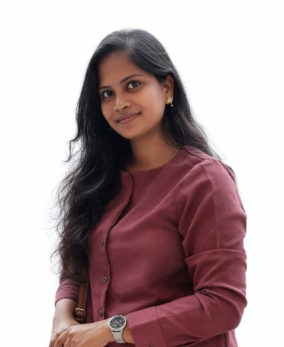